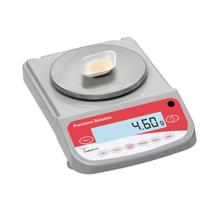

Menu
Scale
A scale is a tool to measure the weight of an object. Most scales will show you a number that uses "mass units" like kilograms/grams; however, know that the scale is really measuring the force of weight of the object. In this class, recording a weight from a scale as the mass will be acceptable
In order to use a scale, you first must "tare" or zero the scale. This means placing the empty container onto the scale and pressing the tare button. This automatically subtracts the weight of the container from the total weight so that you will only see the weight of the substance.
Now you try
Read and record the weight seen on the scale. Answer the questions on your lab report.
